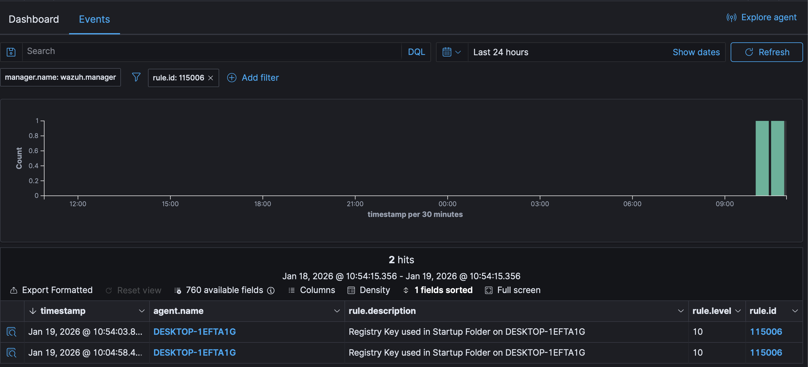
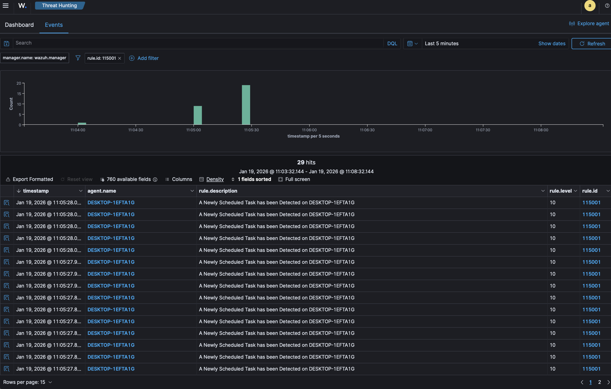

Detecting Windows Persistence with Wazuh and Sysmon
Registry Run keys and scheduled tasks are two routes to the same goal. Sysmon, a handful of Wazuh rules, and Atomic Red Team catch both and prove it.
Initial access is hard to stop. Phishing works, and sooner or later something runs that shouldn't. The better chance to catch an attacker is the step that comes right after: making sure their code runs again after a reboot or the next logon.
That step rarely involves anything clever. In this post I set up Sysmon and Wazuh to detect the two most common ways it's done, Registry Run keys and scheduled tasks, and then trigger both with commands from Atomic Red Team to confirm the alerts fire.
Persistence is a goal, not a technique
Defenders tend to think of persistence as a list of mechanisms: Run keys, scheduled tasks, services, startup folders. Attackers think of it as one question:
Will my code run again after the user logs back in or the machine restarts?
Run keys and scheduled tasks are two answers to the same question, and attackers swap between them freely. That's why it makes sense to detect them together.
Set up Sysmon
Sysmon is a Sysinternals tool that logs process creation, network connections, and file and registry changes to the Windows Event Log. Wazuh picks those events up from there.
- Download Sysmon from Microsoft Sysinternals and extract it.
- In an elevated PowerShell session, download Olaf Hartong's sysmon-modular config. It tags each event with its MITRE ATT&CK technique, which the rules below rely on.
curl https://raw.githubusercontent.com/olafhartong/sysmon-modular/refs/heads/master/sysmonconfig.xml -o sysmonconfig.xml- Install Sysmon with that config:
Sysmon64.exe -accepteula -i sysmonconfig.xml- In the Wazuh dashboard, open Agent Management, select the endpoint's group, and add the Sysmon channel to its configuration:
<localfile>
<location>Microsoft-Windows-Sysmon/Operational</location>
<log_format>eventchannel</log_format>
</localfile>- Restart the agent on the endpoint:
Restart-Service -Name wazuhAdd the detection rules
Go to Server Management → Rules → Manage rule files, open local_rules.xml, and add the rules below. Each one matches the ATT&CK tag that sysmon-modular writes into ruleName. Alongside the two persistence techniques, I included a few related ones that use the same pattern.
<group name="windows,sysmon,">
<rule id="115001" level="10">
<if_group>windows</if_group>
<field name="win.eventdata.ruleName" type="pcre2">technique_id=T1053,technique_name=Scheduled Task</field>
<description>A Newly Scheduled Task has been Detected on $(win.system.computer)</description>
<mitre>
<id>T1053</id>
</mitre>
</rule>
<rule id="115002" level="10">
<if_group>windows</if_group>
<field name="win.eventdata.ruleName" type="pcre2">technique_id=T1073,technique_name=DLL Side-Loading</field>
<description>DLL Side-Loading Detected on $(win.system.computer)</description>
<mitre>
<id>T1073</id>
<id>T1574.002</id>
</mitre>
</rule>
<rule id="115003" level="10">
<if_group>windows</if_group>
<field name="win.eventdata.ruleName" type="pcre2">technique_id=T1218.010,technique_name=Regsvr32</field>
<description>Signed Binary Proxy Execution using Regsvr32 Detected on $(win.system.computer)</description>
<mitre>
<id>T1218</id>
<id>T1117</id>
</mitre>
</rule>
<rule id="115004" level="10">
<if_group>windows</if_group>
<field name="win.eventdata.ruleName" type="pcre2">technique_id=T1518.001,technique_name=Security Software Discovery</field>
<description>Security Software Discovery Attempt has been Detected on $(win.system.computer)</description>
<mitre>
<id>T1518</id>
</mitre>
</rule>
<rule id="115005" level="10">
<if_group>windows</if_group>
<field name="win.eventdata.ruleName" type="pcre2">technique_id=T1548.002,technique_name=Bypass User Access Control</field>
<description>Privilege Escalation Through Bypass of UAC has been Detected on $(win.system.computer)</description>
<mitre>
<id>T1548.002</id>
<id>T1088</id>
</mitre>
</rule>
<rule id="115006" level="10">
<if_group>windows</if_group>
<field name="win.eventdata.ruleName" type="pcre2">technique_id=T1547.001,technique_name=Registry Run Keys / Start Folder</field>
<description>Registry Key used in Startup Folder on $(win.system.computer)</description>
<mitre>
<id>T1547.001</id>
<id>T1547</id>
</mitre>
</rule>
</group>Save, then restart the manager.
Test it
The commands below come from Atomic Red Team, an open-source library of small, ATT&CK-mapped tests. They produce the same telemetry a real attacker would, without any actual malware.
Scenario 1: Registry Run key
On the endpoint, add a Run key entry:
New-ItemProperty -Path "HKCU:\Software\Microsoft\Windows\CurrentVersion\Run" -Name "Updater" -Value "%LOCALAPPDATA%\Microsoft\WindowsApps\updater.exe" -PropertyType ExpandString -ForceIn Wazuh, open Threat Hunting → Events. Rule 115006 should appear within a few seconds.

Scenario 2: Scheduled tasks at logon and startup
From a command prompt, create two tasks, one that runs at logon and one that runs at startup as SYSTEM:
schtasks /create /tn "T1053_005_OnLogon" /sc onlogon /tr "cmd.exe /c calc.exe"
schtasks /create /tn "T1053_005_OnStartup" /sc onstart /ru system /tr "cmd.exe /c calc.exe"In Threat Hunting → Events, filter on rule.id: 115001.

Clean up afterwards:
schtasks /delete /tn "T1053_005_OnLogon" /f >nul 2>&1
schtasks /delete /tn "T1053_005_OnStartup" /f >nul 2>&1Takeaways
Run keys and scheduled tasks stay popular because they look like normal Windows activity. With Sysmon providing the telemetry and sysmon-modular providing the ATT&CK tags, each new detection in Wazuh is a few lines of XML, and Atomic Red Team gives you a quick way to prove each one works. Coverage can grow one technique at a time.